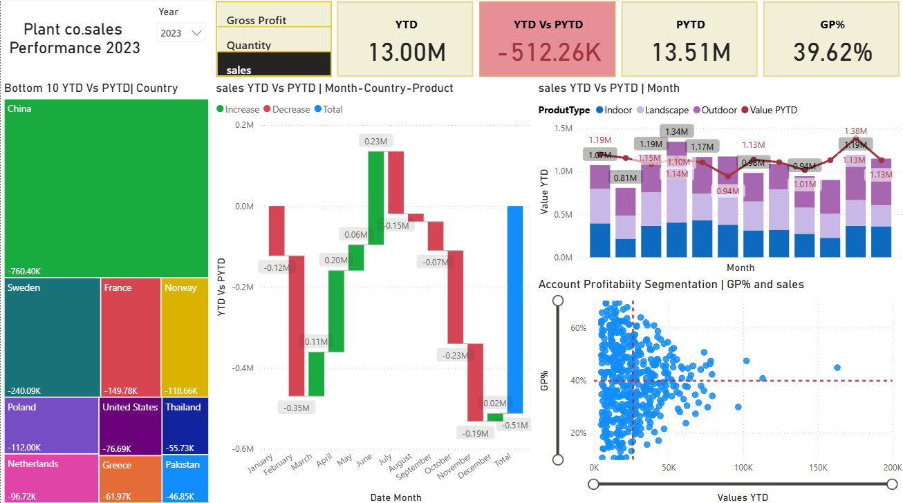
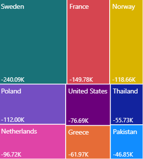
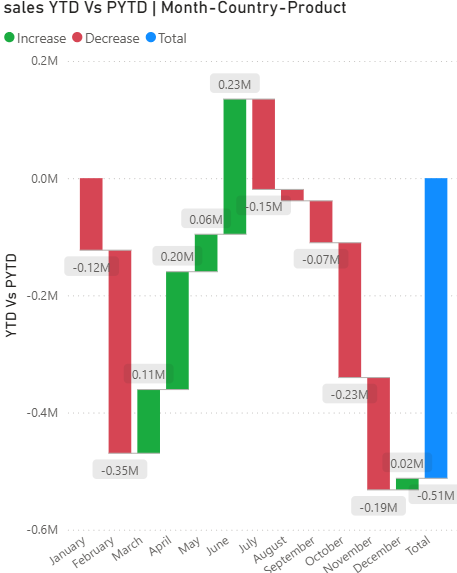
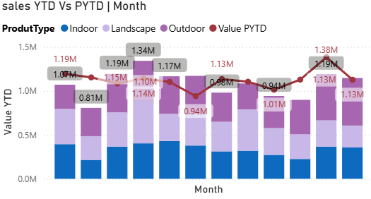

Sales Performance Analysis: YTD vs PYTD
Executive Summary
This project analyzes year-to-date (YTD) versus prior year-to-date (PYTD) sales performance using an interactive Power BI dashboard.
The report enables business users to compare current performance against historical benchmarks across sales, gross profit,
and quantity metrics. Advanced DAX time-intelligence, switch measures, and conditional formatting are used to highlight trends,
variances, and performance gaps to support data-driven decision-making.

Business Problem
Businesses often track YTD performance but lack clear visibility into how current results compare with the same period in the prior year.
Without PYTD comparisons, it becomes difficult to identify growth trends, seasonal impacts, or underperformance.
The challenge was to design a single, intuitive dashboard that dynamically compares YTD and PYTD metrics while enabling users
to switch between key business measures.
Methodology
- Prepared and cleaned transactional sales data using Power Query.
- Built a robust data model with fact and dimension tables.
- Created a continuous Date table to support accurate time-intelligence calculations.
- Developed core DAX measures:
- Sales
- Gross Profit
- Quantity
- YTD and PYTD calculations
- YTD vs PYTD variance
- Implemented switch measures to dynamically toggle metrics across the report.
- Applied conditional formatting to highlight positive and negative performance changes.
Dashboard Features
Treemap – Bottom 10 Countries (YTD vs PYTD)
- Purpose: To pinpoint underperforming geographical areas.
- Visual Choice: A Treemap was selected for its ability to represent hierarchical data and relative contribution, making it easy to identify countries driving overall decline.
- Key Insight: Filtered to display the bottom 10 countries based on YTD vs PYTD variance, enabling quick identification of regions with significant sales or gross profit drops.

Waterfall Chart – Contribution to Variance
- Purpose: To break down the overall YTD vs PYTD difference into contributing factors.
- Visual Choice: A Waterfall Chart clearly shows how positive and negative changes accumulate from the starting value to the final variance.
- Key Insight: Users can drill down by country and product category to understand which segments are driving growth or decline.

Line & Stacked Column Chart – Monthly Performance
- Purpose: To analyze monthly and quarterly performance trends and compare current year results against the prior year.
- Visual Choice: A combination of stacked columns (YTD by product type) and a line (PYTD) allows direct visual comparison within the same chart.
- Key Insight: Helps identify periods where current year performance deviates from the prior year, with product-level context.

Scatter Chart with Zoom Slider – Account Profitability & Quantity
- Purpose: To segment accounts based on profitability and sales or quantity performance.
- Visual Choice: A Scatter Chart effectively reveals relationships, clusters, and outliers, while the zoom slider helps navigate dense data points.
- Key Insight: Identifies:
- High sales/quantity but low GP% accounts (profitability risk)
- Low sales/quantity but high GP% accounts (growth opportunities)
Average lines for GP% and Sales/Quantity provide clear benchmarks for segmentation.

Results
- Identified regions and products contributing most to performance decline or growth.
- Highlighted key variance drivers between current and prior year performance.
- Enabled dynamic comparison across sales, profit, and quantity metrics.
- Improved visibility into performance trends using interactive visuals.
Business Recommendations
- Focus on underperforming regions and products identified through variance analysis.
- Use PYTD comparisons to distinguish seasonality from true performance issues.
- Leverage profitability insights to optimize pricing and cost strategies.
- Adopt similar dashboards for monthly, quarterly, and regional reviews.
Skills & Tools Used
- Power BI
- DAX (Time-Intelligence & Switch Measures)
- Power Query (ETL)
- Data Modeling
- Business Performance Analysis
- Dashboard Design & Storytelling
Conclusion
This Sales YTD vs PYTD dashboard provides a clear and dynamic view of business performance by combining time-based comparisons,
profitability metrics, and interactive analysis. It empowers stakeholders to quickly identify trends, risks, and opportunities,
demonstrating the effectiveness of Power BI as a strategic decision-support tool.
Project Links
View GitHub Repository
← Back to Portfolio